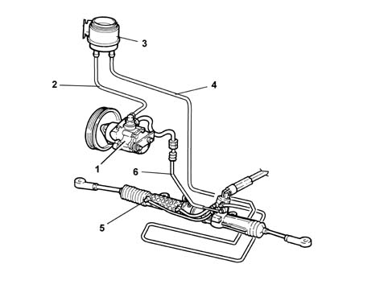
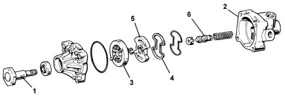
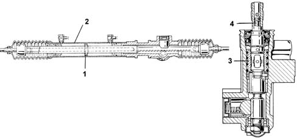

Introduction - POWER ASSISTED STEERING
- Path
- Descriptions > 41 STEERING > 4130 POWER ASSISTED STEERING > Introduction - POWER ASSISTED STEERING
- Kind
- system description
- Applies to
- all engines; all production periods
- Interactive page
- https://sloeber94.github.io/elrnDB-fMltpl/en/#/2892442
Applies to: all engines; all production periods
STEERING CONTROL AND LINKAGE
The power assisted steering system consists of:
- the fluid reservoir in the engine compartment
- the vane pump, driven by the engine, including the maximum pressure and flow rate valve
- a series of pump-distributor valve-operating cylinder-reservoir connecting pipes
- a rack and pinion steering box with hydraulic power assistance

1, Power assisted steering pump 2, Oil supply pipe to the pump 3, Fluid reservoir 4, Oil return pipe to the reservoir 5, Power assisted steering box 6, Oil supply pipe under pressure
VANE PUMP
The vane pump is driven directly by the engine through a belt and is capable of providing the system with a supply pressure which varies from 3.5 bar in the "neutral" steering position to 85 bar in the "fully steered" position.

1, Control shaft 2, Pump casing 3, Impeller with vanes 4, Gasket 5, Impeller side plate 6, Regulating valve
POWER ASSISTED STEERING BOX
The power assisted steering box is the rack and pinion type; it contains an operating cylinder (2) in which a dual action piston (1), fixed to the rack rod, slides.
The worm screw housing contains a distributor valve (3). The latter is controlled according to the effort detected by a torsion device (4) located at the end of the worm screw, steering column side.

1, Dual action piston 2, Operating cylinder 3, Distributor valve 4, Torsion device
According to the torsion force transmitted by the steering wheel to the torsion device, the oil under pressure is sent to the reservoir (recirculated), or to one of the two chambers in the operating cylinder.
The force produced by the pressure of the oil on the surface of the piston determines the power assisted effect provided by the device.